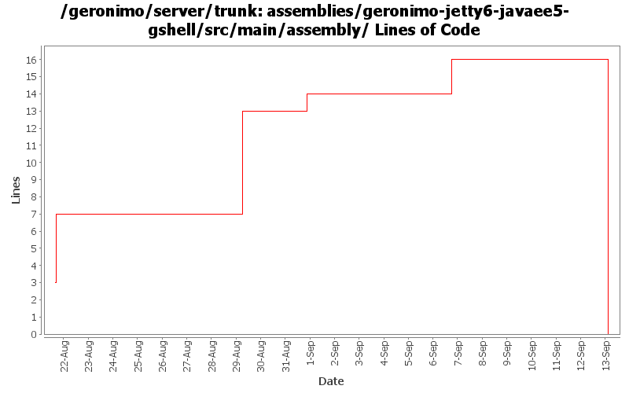

[root]/assemblies/geronimo-jetty6-javaee5-gshell/src/main/assembly

| Author | Changes | Lines of Code | Lines per Change |
|---|---|---|---|
| jdillon | 8 (100.0%) | 31 (100.0%) | 3.8 |
Drop the POC assembly
0 lines of code changed in 1 file:
Update for the latest gshell changes
8 lines of code changed in 1 file:
Update to use latest gshell bits
3 lines of code changed in 1 file:
Hook up the jcl over slf4j for supporting any kernel bits we use from the start command
Cleaned up other command support classes to use the proper slf4j api
1 lines of code changed in 1 file:
Update to use gshell 1.0-alpha-1-SNAPSHOT, pending a little more work to finish upgrading to the level of cli support as before
12 lines of code changed in 1 file:
Pick up some jars from lib/* for now to save on some space
7 lines of code changed in 1 file:
(GERONIMO-3434) Add new assembly based on jetty-jee5 which uses GShell to launch the server process
0 lines of code changed in 2 files: